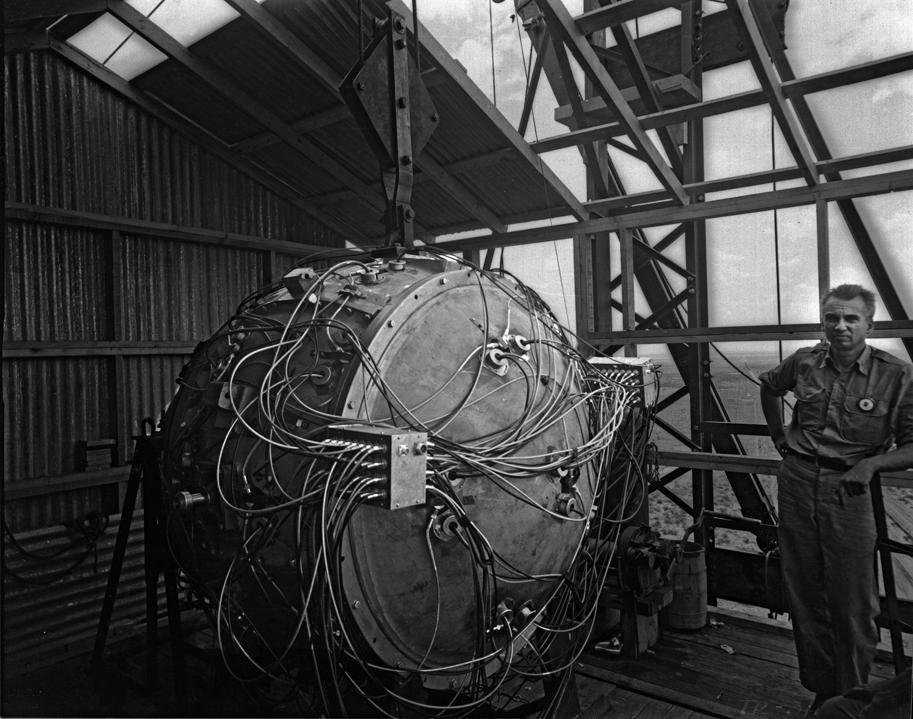
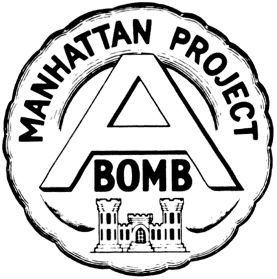

- During World War II, the Manhattan Project was a top-secret research and development project with the goal of developing the first nuclear weapons. The project, which was actively supported by the United States and included the UK and Canada, was motivated by fears that Nazi Germany was creating nuclear weapons. General Leslie Groves and J. Robert Oppenheimer, the project's scientific directors, oversaw the $2 billion venture. The project led to the development of the first nuclear weapons, which were employed in the August 1945 atomic bombings of Nagasaki and Hiroshima. It significantly affected domestic politics, international relations, and science and technology.
- Nuclear weapons played a significant role during the Cold War, a time of tension between the United States and the Soviet Union. An arms race resulted from both nations' developing sizable nuclear arsenals. The threat of mutually assured destruction (MAD) from nuclear weapons was also employed as a deterrent to avert direct conflict. The number of nuclear weapons has been restricted through the signing of arms control agreements like SALT and ABM. During the Cold War, the threat of nuclear war had a significant impact on society and raised worries about the possible outcomes of a nuclear conflict.
- International relations are impacted by nuclear weapons in a complicated and contentious way. Due to their potential for destruction, they act as a deterrent and prevent nations from using them. Nuclear and non-nuclear states are now divided by the possession of nuclear weapons, with non-nuclear states frequently supporting disarmament. Although the threat of nuclear retaliation kept things peaceful during the Cold War, there is still cause for concern regarding the spread of nuclear weapons to numerous nations. Nuclear weapons continue to play a significant role in determining international relations and the balance of power.

